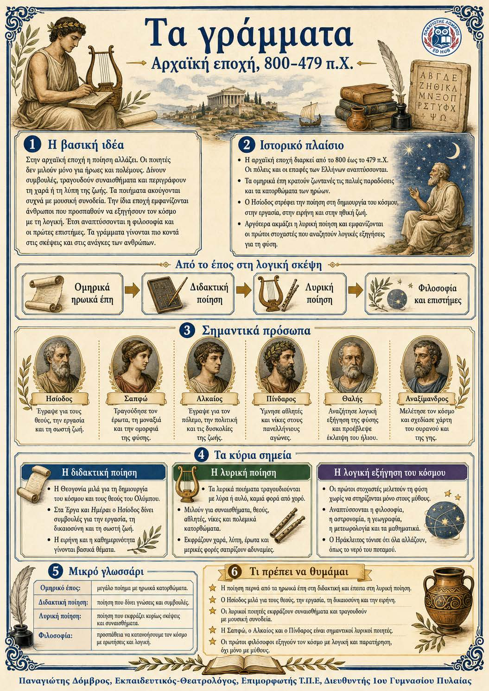

Πληροφοριογράφημα ενότητας
Το πληροφοριογράφημα αυτής της ενότητας δεν έχει ανέβει ακόμη. Οι σημειώσεις παραμένουν πλήρως διαθέσιμες.

Κεφάλαιο 4 · Αρχαϊκή εποχή, 800–479 π.Χ.
Στην αρχαϊκή εποχή η ποίηση αλλάζει. Οι ποιητές δεν μιλούν μόνο για ήρωες και πολέμους. Δίνουν συμβουλές, τραγουδούν συναισθήματα και περιγράφουν τη χαρά ή τη λύπη της ζωής. Τα ποιήματα ακούγονται συχνά με μουσική συνοδεία. Την ίδια εποχή εμφανίζονται άνθρωποι που προσπαθούν να εξηγήσουν τον κόσμο με τη λογική. Έτσι αναπτύσσονται η φιλοσοφία και οι πρώτες επιστήμες. Τα γράμματα γίνονται πιο κοντά στις σκέψεις και στις ανάγκες των ανθρώπων.
